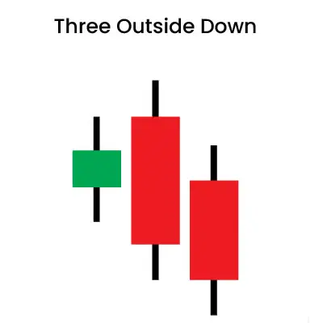
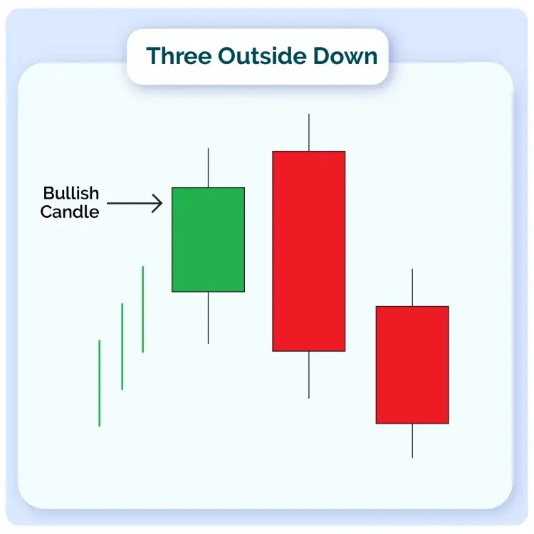
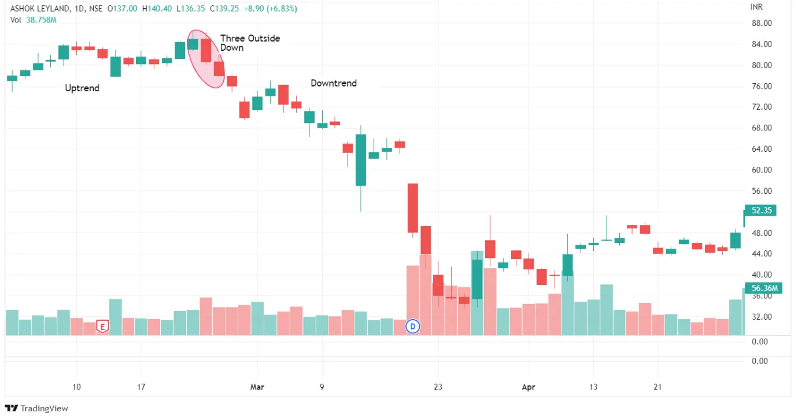

तीन लगातार कैंडलस्टिक्स तीन बाहरी नीचे पैटर्न बनाते हैं, जो आमतौर पर एक उद्दंशी रुख के दौरान प्रकट होता है। इन कैंडलों की गति हमेशा यह बताती है कि एक रुख उलटने का क्या अवसर है या नहीं।
एक उद्दंशी कैंडल के बाद दो निम्नांकीय कैंडल आकार लेते हुए यह पैटर्न बनते हैं। बाद-रुख ट्रेडिंग टैक्टिक्स काम करने के लिए, इस पैटर्न की सटीक खोज बहुत महत्वपूर्ण होती है।
| Formation |
चलो बात करते हैं कि यह कैंडलस्टिक पैटर्न कैसे बनता है।

1. तीन बाहरी नीचे पैटर्न प्रकट होने के लिए बाजार उपट्रेंड होना चाहिए।
2. पैटर्न की पहली कैंडल सफेद होगी, जो एक उद्दंशी रुख को दर्शाती है।
3. अगले में एक बड़ी काली कैंडल बनेगी। यह पहली सफेद कैंडल को पूरी तरह से अपनी असली शरीर में समाहित करने के लिए पर्याप्त लंबी होगी।
4. तीसरी और अंतिम कैंडल, जो तीन बाहरी नीचे को दर्शाती है, भी काली होनी चाहिए। लेकिन, इस कैंडल का बंद होना दूसरी कैंडल से ऊपर होना चाहिए। इससे यह पता चलता है कि उपट्रेंड दिशा बदलने जा रही है।
| Trading Example |
जैसा कि देखा जा सकता है, कीमत मजबूती से ऊपर जा रही है, जिससे यह पता चलता है कि बैलों ने बाजार पर काबू पा लिया है। इस परिणाम के रूप में, पैटर्न में पहली कैंडल उन्नति के अनुसार सही ढंग से बंद होती है।
वहीं, कैंडल का शरीर मोदेस्ट रहता है, जो खरीदारी के उत्साह में धीमी गति का पता लगाने की संभावना दर्शाता है। अंत में, दूसरी कैंडल 'गैप अप' खोलती है, जिससे यह पता चलता है कि बैलों को मूल्यों को और ऊपर धकेलने की कोशिश की जा रही है।

खरीदारी के उत्साह इस समय पूरी तरह से फीका पड़ गया है, और भालु बाजार में दाखिल हो गए हैं। बाजार में विक्रेताओं की इस त्वरित लहर ने बाजार को पलट दिया है, जिससे कीमत गिरती है। दूसरी सत्र में भालुओं का कब्जा इतना मजबूत होता है कि दूसरी कैंडल की समाप्ति की कीमत बुलिश कैंडल की आरंभिक कीमत से कम हो जाती है।
मजबूत बिक्री दबाव के कारण, दूसरी कैंडल पहली कैंडल को अवलोकित कर लेती है। भालु तीसरी सत्र में गति बढ़ाते हैं, जिससे पैटर्न की आखिरी कैंडल नकारात्मक क्षेत्र में समाप्त होती है।